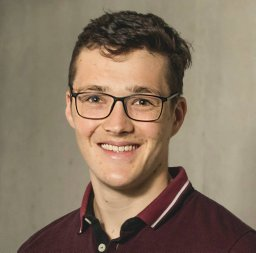

Vision-Language-Action (VLA) and robotic foundation models are now a dominant paradigm, but evaluation practices remain fragmented across platforms, tasks, datasets, embodiments, and experimental protocols. A single task-success rate rarely explains how a policy behaves, why it fails, whether it generalizes, or how robustly it operates outside its evaluation setting. The LLM and VLM communities worked through a version of this problem by moving to holistic, multi-metric, reproducible evaluation. Robotics has reached the same inflection point, but the transition is harder here, because a policy cannot be evaluated by an API call.
This workshop focuses on mobile robots in unstructured and real-world environments. Unlike many tabletop or simulation settings, these environments cannot be reset exactly: episodes can be long and interrupted, conditions change between trials, platforms differ, and large-scale evaluation is expensive and weather-dependent. Even the unit of evaluation, the trial itself, becomes unclear.
We bring together researchers from academia and industry who build foundation models, benchmarks, real-world robot systems, and measurement standards to address: what constitutes a fair trial; how to distinguish genuine generalization from a fortunate test distribution; how to evaluate policies when they cannot be centrally executed on every platform; how many trials are sufficient and what must be reported; and which behavioral, robustness, safety, intervention, and deployment-cost metrics are actually measurable in the field.
Why ICRA 2027
Robot learning is advancing faster than the evaluation methodology needed to compare systems fairly and responsibly. New models, datasets, and deployment platforms are appearing rapidly, yet the community still lacks a shared framework for answering a fundamental question: how should these systems be compared fairly, reproducibly, and meaningfully?
Much of robot-learning benchmarking has been developed around simulation or controlled laboratory settings, where scenes can be reset, trials repeated, and conditions held approximately constant. Physical robots operating in unstructured environments violate many of these assumptions. As foundation models move from simulation and controlled demonstrations toward real robotic systems, evaluation must address generalization, robustness, repeatability, safety, intervention, efficiency, failure modes, and environmental variability alongside task success.
ICRA 2027 is a timely venue to advance a community discussion around holistic benchmarking, standardization, and reproducible real-world evaluation, and to identify practical steps toward evaluation practices that can scale with the next generation of robot learning systems.
Topics
- What constitutes a fair trial when the world cannot be reset?
- How do we distinguish genuine generalization from a fortunate test distribution?
- How can policies be evaluated when they cannot be centrally executed on every platform?
- How many trials are sufficient, and what must be reported alongside the number?
- Which behavioral, robustness, safety, and intervention metrics are measurable in the field?
- Which metrics should accompany task-success rate?
- How should evaluation account for embodiment, environmental variation, and deployment cost?
- Reproducible real-world benchmarking and reporting protocols for robotic foundation models
Format
The half-day, in-person workshop is designed around active exchange rather than a sequence of invited talks. It combines invited perspectives from academia and industry with an open call for short, non-archival papers, a poster session, and three contributed spotlight presentations. A substantial part of the program is reserved for participant polling, moderated breakout groups on metrics, generalization, real-world protocols, and reporting standards, report-backs, and a moderated debate between industry and academia that explicitly invites disagreement about evidence, robustness, safety, and reproducibility. See the schedule for details.
To encourage broad participation, the workshop includes Best Student Presentation and Best Poster awards sponsored by NVIDIA, together with two travel grants for underrepresented students or postdocs provided by the IEEE RAS Robot Learning Technical Committee.
Expected Outcomes
- A shared set of practical recommendations for trial definitions, reporting protocols, multi-metric evaluation, and reproducible real-world benchmarking.
- A prioritized list of open research questions.
- A continuing community mechanism through the IEEE RAS Robot Learning Technical Committee and related standardization and benchmarking activities.
Slides and accepted non-archival contributions (where permitted) will be posted on this website after the workshop. Discussion outputs and recommendations will be consolidated and published within four weeks after the event.
We invite short, non-archival papers. Selected contributions will be presented as posters, and three papers will be invited for spotlight presentations. Read the call for papers for more details.
Important Dates and Links
| Workshop announcement and call for papers |
31 January 2027 |
| Submission site |
OpenReview (link TBA) |
| Submission deadline |
20 March 2027 |
| Decisions announced |
20 April 2027 |
| Camera-ready due |
TBA |
| Workshop date and room |
TBA |
Invited Speakers
Prof. Hae-Won Park
KAIST
Talk title: TBA
Dr. Xuning Yang
NVIDIA Seattle Robotics Lab
Talk title: TBA
Dr. Shehryar Khattak
Director of Technology, Field AI
Talk title: TBA
Prof. Hadas Kress-Gazit
Cornell University / Toyota Research Institute
Talk title: TBA
Debate Panelists
A moderated debate between industry and academia on what a benchmark for real-world robot learning should actually measure.
Prof. David Hsu
NVIDIA Singapore
Prof. Angela Schoellig
Technical University of Munich (TUM)
Dr. Will Maddern
Wayve
Organizers
The organizing team brings together senior and early-career researchers across academia and industry, spanning robotic foundation models, benchmarking, datasets, and real-world robot deployment. The team includes research leaders from Toyota Research Institute (TRI), NVIDIA, CSIRO, the University of Freiburg, and the National University of Singapore, alongside early-career researchers from Stanford/BAIR, the University of Washington, and the University of Freiburg. Collectively, the organizers have delivered workshops, tutorials, challenges, and technical programs at ICRA, IROS, RSS, CoRL, CVPR, NeurIPS, ICCV, ACCV, and related venues. The workshop is supported by two Co-Chairs of the IEEE RAS Technical Committee on Robot Learning and aligns with its activities on standardization and benchmarking for real-world robot learning.
Primary IEEE RAS Technical Committee: Robot Learning. Secondary: Computer & Robot Vision; Verification of Autonomous Systems; Algorithms for Planning and Control of Robot Motion.

Jonas Frey
Stanford University / BAIR
Sponsors
The workshop is sponsored by NVIDIA, which supports the Best Student Presentation and Best Poster awards, and is conducted in collaboration with the IEEE RAS Technical Committee on Robot Learning, which will provide two travel grants for underrepresented students or postdocs to attend ICRA 2027.